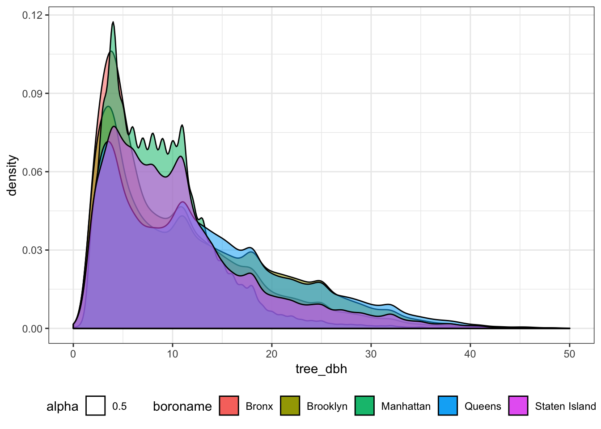
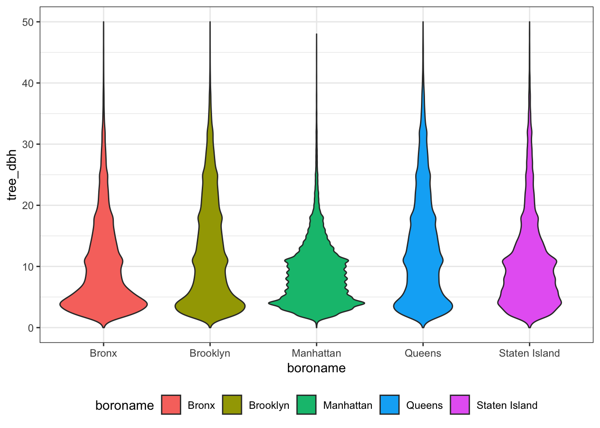
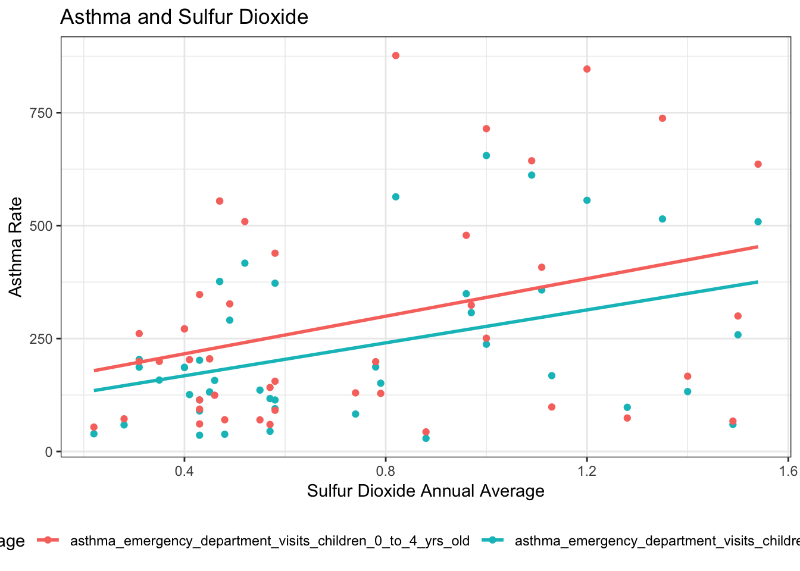
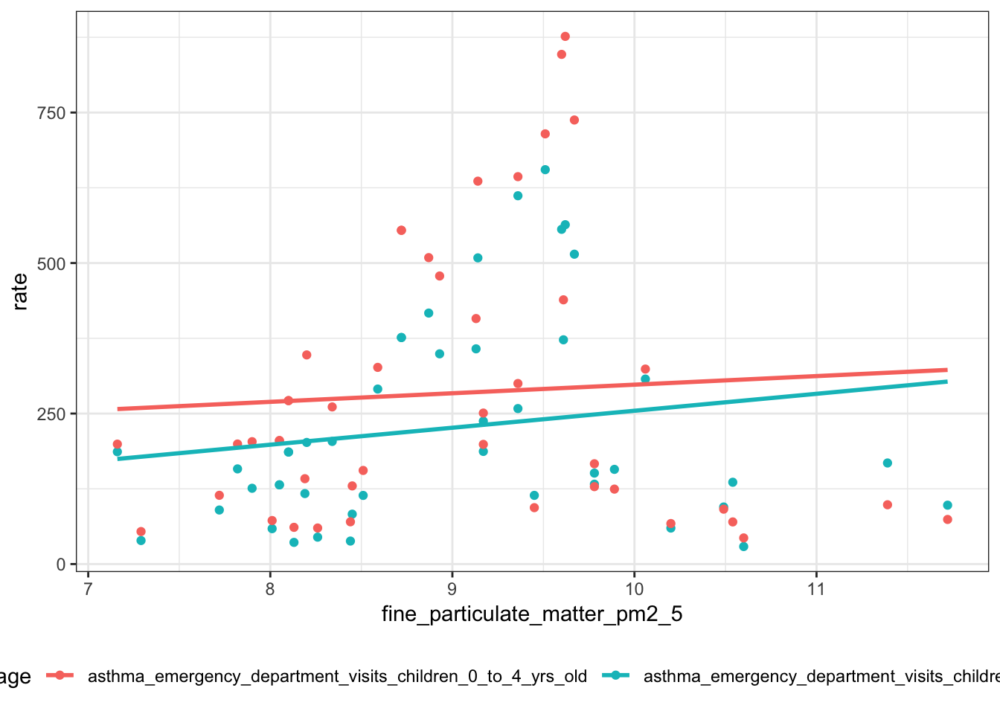
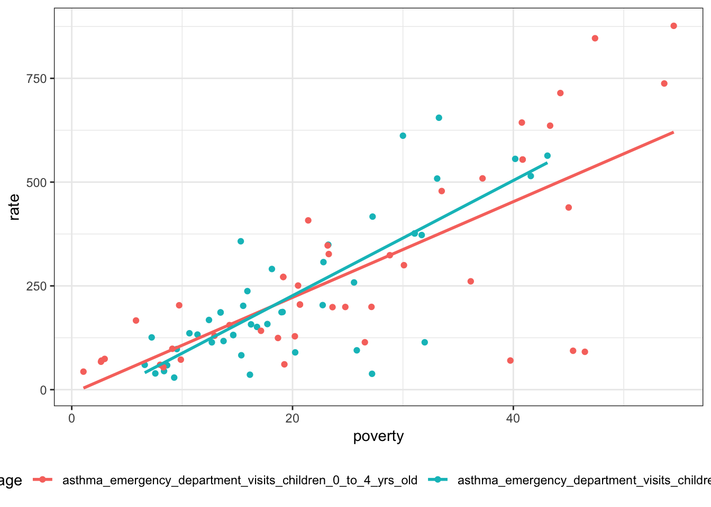
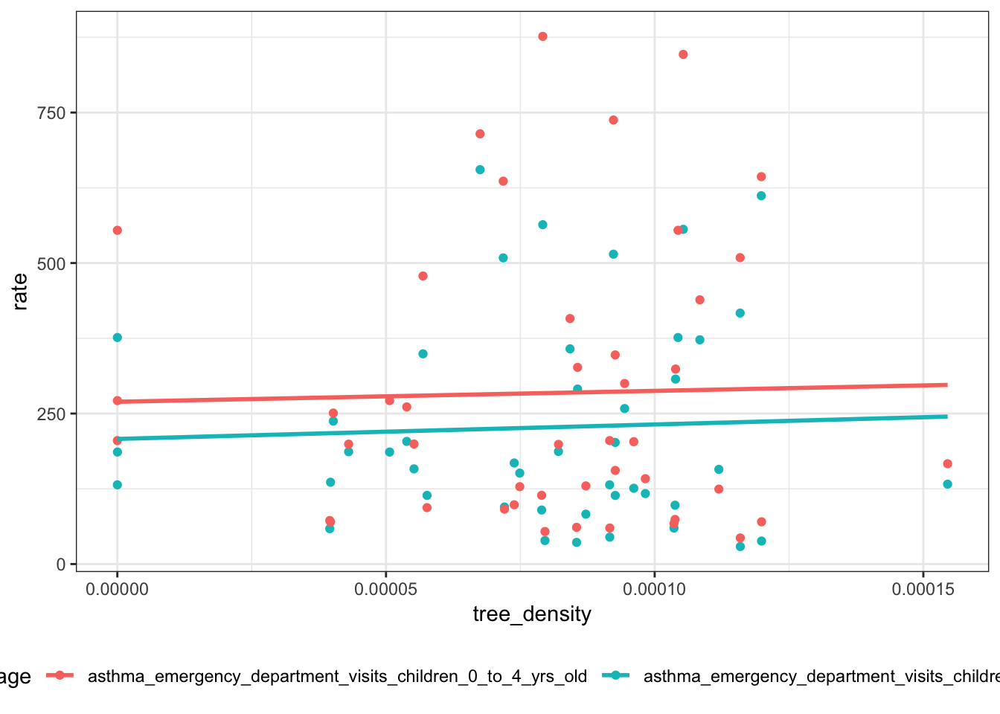

library(tidyverse)## -- Attaching packages ------------------------------------------------------------- tidyverse 1.2.1 --## √ ggplot2 3.1.0 √ purrr 0.2.5
## √ tibble 1.4.2 √ dplyr 0.7.8
## √ tidyr 0.8.2 √ stringr 1.3.1
## √ readr 1.1.1 √ forcats 0.3.0## -- Conflicts ---------------------------------------------------------------- tidyverse_conflicts() --
## x dplyr::filter() masks stats::filter()
## x dplyr::lag() masks stats::lag()library(dplyr)
library(readr)
library(ggplot2)
library(readxl)#import and tidy tree data
tree_df = read_csv("./data/2015StreetTreesCensus_TREES.csv") %>%
janitor::clean_names() %>%
filter(status == "Alive") ## Parsed with column specification:
## cols(
## zipcode = col_integer(),
## boroname = col_character(),
## tree_dbh = col_integer(),
## status = col_character(),
## health = col_character(),
## spc_common = col_character(),
## Latitude = col_double(),
## longitude = col_double()
## )zipcode_uhf42 = read_excel("./data/Zipcode_UHF42.xlsx") %>%
gather(key = zipcode_no, value = zipcode, zipcode1:zipcode9) %>%
select(-zipcode_no, uhf42_name) %>%
filter(is.na(zipcode) == FALSE)
tree_df = left_join(tree_df, zipcode_uhf42, by = "zipcode")
mydat = rgdal::readOGR("./UHF42/UHF_42_DOHMH.shp")## OGR data source with driver: ESRI Shapefile
## Source: "E:\Master\Data Science\Assignments\Final\p8105_final_project\UHF42\UHF_42_DOHMH.shp", layer: "UHF_42_DOHMH"
## with 43 features
## It has 8 fieldsarea=data.frame(uhf42_code = mydat$UHFCODE,area = mydat$SHAPE_Area) %>%
filter(is.na(uhf42_code) == FALSE)
tree_df = left_join(tree_df, area, by = "uhf42_code")#among 652,173 trees, only 361 trees have diameter larger than 70, so we make plots without them.
#density plot of tree_dbh
ggplot(tree_df) +
geom_density(aes(x = tree_dbh, fill = boroname, alpha = 0.5))+
scale_x_continuous(limits = c(0, 50)) +
theme(legend.position = "bottom")## Warning: Removed 361 rows containing non-finite values (stat_density).
#violin plot of tree_dbh
ggplot(tree_df) +
geom_violin(aes(x = boroname, y = tree_dbh, fill = boroname))+
scale_y_continuous(limits = c(0, 50)) +
theme(legend.position = "bottom")## Warning: Removed 361 rows containing non-finite values (stat_ydensity).
#tree density
tree_density = tree_df %>%
group_by(uhf42_name, uhf42_code, area) %>%
dplyr::summarize(tree_total = n()) %>%
filter(is.na(uhf42_name) == FALSE) %>%
group_by(uhf42_name) %>%
dplyr::mutate(tree_density = tree_total/area) %>%
ungroup() %>%
mutate(uhf42_name = forcats::fct_reorder(uhf42_name, tree_density))#read and tidy data
asthma_air_poverty = read_csv("./data/asthma_pollutes_poverty.csv") %>%
select(geo_entity_id, geo_entity_name, name, data_value) %>%
filter(is.na(geo_entity_id) == FALSE) %>%
spread(key = name, value = data_value) %>%
janitor::clean_names() %>%
select(poverty, children_under_5_years_old_in_poverty, everything()) %>%
mutate(asthma_total = asthma_emergency_department_visits_children_0_to_4_yrs_old + asthma_emergency_department_visits_children_5_to_14_yrs_old,
geo_entity_name = forcats::fct_reorder(geo_entity_name, asthma_total))## Parsed with column specification:
## cols(
## `Unique Id` = col_character(),
## indicator_id = col_integer(),
## geo_type_id = col_integer(),
## measurement_type_id = col_integer(),
## internal_id = col_integer(),
## subtopic_id = col_integer(),
## name = col_character(),
## Measure = col_character(),
## geo_type_name = col_character(),
## description = col_character(),
## geo_entity_id = col_integer(),
## geo_entity_name = col_character(),
## year_description = col_character(),
## data_value = col_double(),
## message = col_character()
## )tree_density_total = tree_density %>%
select(geo_entity_id=uhf42_code, tree_density) %>%
distinct()
final_df = left_join(asthma_air_poverty, tree_density_total)## Joining, by = "geo_entity_id"#SLR:choose the pollutes associated with asthma
o3_p1 = summary(lm(asthma_emergency_department_visits_children_0_to_4_yrs_old~ozone_o3, data=final_df))$coefficients[2,4]
o3_p2 = summary(lm(asthma_emergency_department_visits_children_5_to_14_yrs_old~ozone_o3, data=final_df))$coefficients[2,4]
black_carbon_p1 = summary(lm(asthma_emergency_department_visits_children_0_to_4_yrs_old~black_carbon, data=final_df))$coefficients[2,4]
black_carbon_p2 = summary(lm(asthma_emergency_department_visits_children_5_to_14_yrs_old~black_carbon, data=final_df))$coefficients[2,4]
pm2_5_p1 = summary(lm(asthma_emergency_department_visits_children_0_to_4_yrs_old~fine_particulate_matter_pm2_5, data=final_df))$coefficients[2,4]
pm2_5_p2 = summary(lm(asthma_emergency_department_visits_children_5_to_14_yrs_old~fine_particulate_matter_pm2_5, data=final_df))$coefficients[2,4]
no_p1 = summary(lm(asthma_emergency_department_visits_children_0_to_4_yrs_old~nitric_oxide_no, data=final_df))$coefficients[2,4]
no_p2 = summary(lm(asthma_emergency_department_visits_children_5_to_14_yrs_old~nitric_oxide_no, data=final_df))$coefficients[2,4]
no2_p1 = summary(lm(asthma_emergency_department_visits_children_0_to_4_yrs_old~nitrogen_dioxide_no2, data=final_df))$coefficients[2,4]
no2_p2 = summary(lm(asthma_emergency_department_visits_children_5_to_14_yrs_old~nitrogen_dioxide_no2, data=final_df))$coefficients[2,4]
so2_p1 = summary(lm(asthma_emergency_department_visits_children_0_to_4_yrs_old~sulfur_dioxide_so2, data=final_df))$coefficients[2,4]
so2_p2 = summary(lm(asthma_emergency_department_visits_children_5_to_14_yrs_old~sulfur_dioxide_so2, data=final_df))$coefficients[2,4]
p_value = data.frame(Pollute = c("Ozone", "Black Carbon", "PM2.5", "NO", "NO2", "SO2"),
P_value1 = c(o3_p1, black_carbon_p1, pm2_5_p1, no_p1, no2_p1, so2_p1),
P_value1 = c(o3_p2, black_carbon_p2, pm2_5_p2, no_p2, no2_p2, so2_p2)) %>%
knitr::kable(digits = 3)
#based on p values, we choose SO2#MLR
summary(lm(asthma_emergency_department_visits_children_0_to_4_yrs_old~tree_density+sulfur_dioxide_so2+children_under_5_years_old_in_poverty,data=final_df))##
## Call:
## lm(formula = asthma_emergency_department_visits_children_0_to_4_yrs_old ~
## tree_density + sulfur_dioxide_so2 + children_under_5_years_old_in_poverty,
## data = final_df)
##
## Residuals:
## Min 1Q Median 3Q Max
## -390.05 -60.43 2.28 97.32 259.42
##
## Coefficients:
## Estimate Std. Error t value
## (Intercept) -155.24 90.12 -1.723
## tree_density 163130.32 941507.03 0.173
## sulfur_dioxide_so2 189.68 62.76 3.022
## children_under_5_years_old_in_poverty 11.07 1.49 7.434
## Pr(>|t|)
## (Intercept) 0.09307 .
## tree_density 0.86336
## sulfur_dioxide_so2 0.00448 **
## children_under_5_years_old_in_poverty 6.41e-09 ***
## ---
## Signif. codes: 0 '***' 0.001 '**' 0.01 '*' 0.05 '.' 0.1 ' ' 1
##
## Residual standard error: 144.7 on 38 degrees of freedom
## Multiple R-squared: 0.6473, Adjusted R-squared: 0.6195
## F-statistic: 23.25 on 3 and 38 DF, p-value: 1.028e-08summary(lm(asthma_emergency_department_visits_children_5_to_14_yrs_old~tree_density+sulfur_dioxide_so2+poverty,data=final_df))##
## Call:
## lm(formula = asthma_emergency_department_visits_children_5_to_14_yrs_old ~
## tree_density + sulfur_dioxide_so2 + poverty, data = final_df)
##
## Residuals:
## Min 1Q Median 3Q Max
## -238.96 -48.70 10.19 35.69 229.04
##
## Coefficients:
## Estimate Std. Error t value Pr(>|t|)
## (Intercept) -8.828e+01 6.421e+01 -1.375 0.1772
## tree_density -4.140e+05 6.694e+05 -0.619 0.5399
## sulfur_dioxide_so2 1.225e+02 4.567e+01 2.683 0.0107 *
## poverty 1.290e+01 1.684e+00 7.662 3.18e-09 ***
## ---
## Signif. codes: 0 '***' 0.001 '**' 0.01 '*' 0.05 '.' 0.1 ' ' 1
##
## Residual standard error: 103 on 38 degrees of freedom
## Multiple R-squared: 0.6769, Adjusted R-squared: 0.6514
## F-statistic: 26.54 on 3 and 38 DF, p-value: 1.988e-09#asthma and so2
final_asthma_df = gather(final_df, key = asthma_age, value = rate, asthma_emergency_department_visits_children_0_to_4_yrs_old:asthma_emergency_department_visits_children_5_to_14_yrs_old) %>%
gather(key = poverty_age, value = poverty, poverty:children_under_5_years_old_in_poverty) %>%
filter((asthma_age == "asthma_emergency_department_visits_children_5_to_14_yrs_old"&poverty_age == "poverty")|(asthma_age == "asthma_emergency_department_visits_children_0_to_4_yrs_old"& poverty_age == "children_under_5_years_old_in_poverty"))
ggplot(final_asthma_df) +
geom_point(aes(x = sulfur_dioxide_so2, y = rate, color = asthma_age))+
geom_smooth(aes(x = sulfur_dioxide_so2, y = rate, color = asthma_age), method = "lm", se = F) +
theme(legend.position = "bottom")
#asthma and poverty
ggplot(final_asthma_df) +
geom_point(aes(x=poverty,y=rate,color=asthma_age))+
geom_smooth(aes(x=poverty,y=rate,color = asthma_age), method = "lm",se=F) +
theme(legend.position = "bottom")
#asthma and tree
ggplot(final_asthma_df) +
geom_point(aes(x=tree_density,y=rate,color=asthma_age))+
geom_smooth(aes(x=tree_density,y=rate,color = asthma_age), method = "lm",se=F) +
theme(legend.position = "bottom")
#asthma 0-4 and asthma 5-14 in each UHF42
ggplot(final_asthma_df) +
geom_bar(aes(x=geo_entity_name,y=rate,fill=asthma_age),stat = "identity",position = "dodge") +
coord_flip() +
theme(legend.position = "bottom")